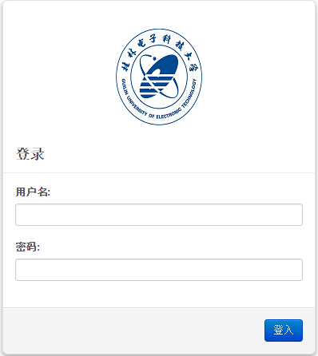
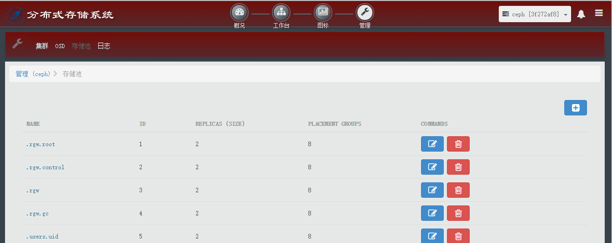
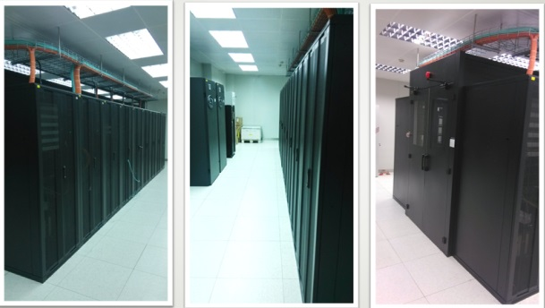
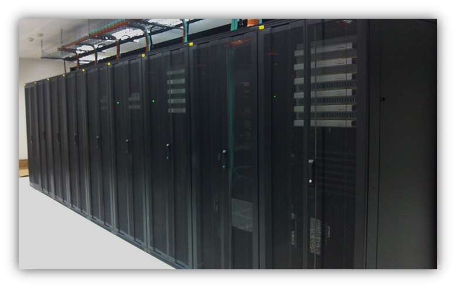

-
- Basic info. 基本信息
- 个人信息: 康文杰 / 男 / 1992.08
- 教育经历: 研究生 / 桂林电子科技大学 / 2017年应届生
- 英语水平: CET-6
-
- Experience. 项目经验
-
桂电云中心OpenStack云平台（2014.12 - 至今） 方案总结 记录
作为主要负责人完成OpenStack底层硬件规划、组件安装和二次开发以及日常的维护。 云平台是基于OpenStack IceHouse版本,为了降低系统宕机时间和数据丢失,在高可用性上通过MySQL+Galera实现数据库的高可用,并对Dashboard做了二次开发。 目前,云平台已为校内师生提供服务。
 -
云中心分布式存储系统 （2015.3 - 至今） 源码
作为主要负责人完成基于Ceph分布式文件系统对云平台机房中存储资源进行虚拟化并集中对外提供存储服务。 利用Calamari管理平台作为日常的维护和管理工具并做了界面优化和二次开发。 该分布式存储系统以块设备的方式为桂林七星区视频监控和海康威视提供存储服务。
 -
广西云计算与大数据协同创新中心 （2016.2 - 至今） 官网
作为维护人员之一，主要负责机房物理机资源,Vmware/Hyper-V/云平台等虚拟资源的正常运作。
  -
安全集群存储与SDN融合研究 （2016.3 - 至今）
在研项目,作为主要参与人负责SDN与分布式存储系统的结合。目前已完成SDN交换机端口流量检测和路径优化,下一步结合现有的分布式存储系统实现数据存取最优化。
-
OpenStack云平台和Ceph的集成 （2015.3 - 2015.4）
作为主要负责人完成OpenStack的Nova组件、Cinder组件和Glance组件调用Ceph提供的API,把Ceph作为其存储后端。
-
广西地矿局地勘项目管理系统 （2015.10 - 2015.11）
作为参与人之一,主要完成的任务是通过Nginx实现管理系统网页访问的负载均衡。
-
- Skill. 技能清单
-
Python
掌握Python语言,了解DjangoFlask等常用的Web框架
-
C/C++
掌握C/C++语言,了解面向对象开发设计模式
熟练使用linux操作系统,了解linux shell脚本编程,会使用linux中常见调试及分析工具
-
LINUX
熟练使用linux操作系统,了解linux shell脚本编程,会使用linux中常见调试及分析工具
-
OpenStack
理解OpenStack体系架构,熟悉OpenStack核心组件
-
分布式存储
了解分布式存储/文件系统,熟悉Ceph整体设计架构以及与OpenStack集成
-
其他
了解基本的网络知识,熟悉OpenFlow协议和SDN架构,有基于开源控制器Ryu的设计和开发能力
熟悉KVM/Xen虚拟化技术
理解Nginx/Apache常用的Web-Server的工作原理
熟悉MySQL/MongoDB/HBase 数据库技术
熟练使用Git版本控制工具,了解LaTeX,Markdown排版语法